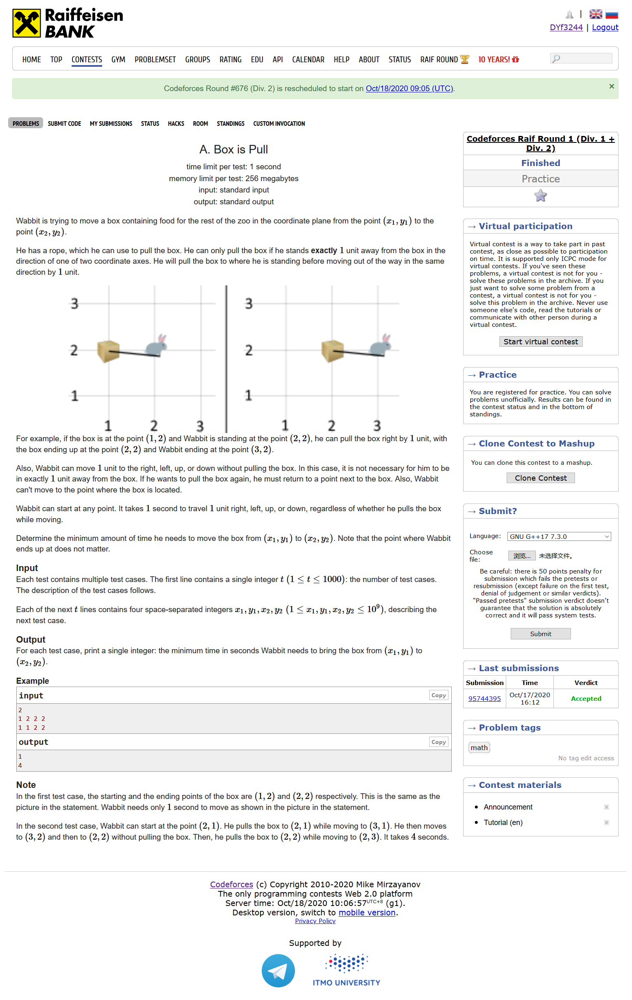
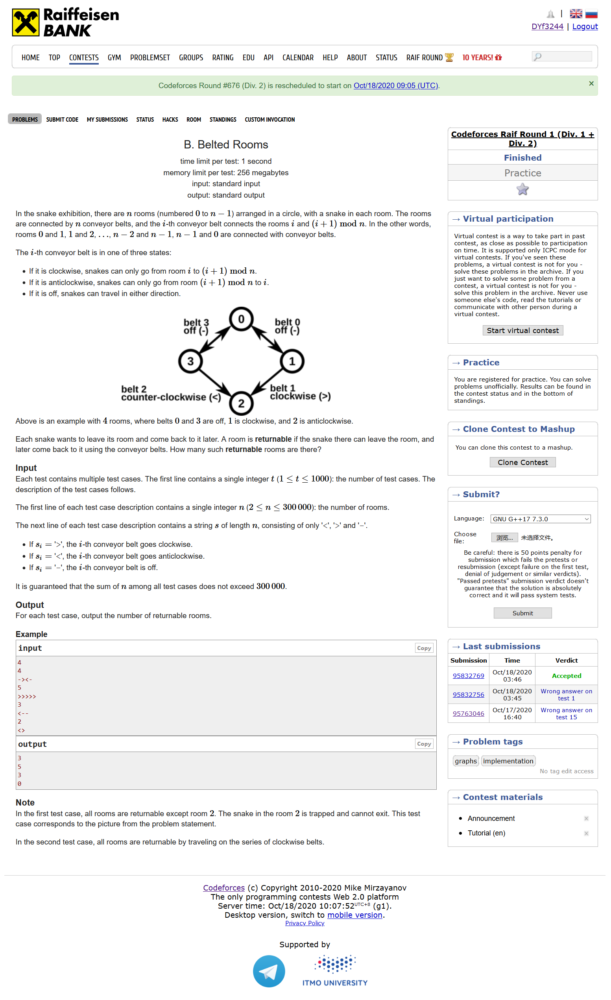
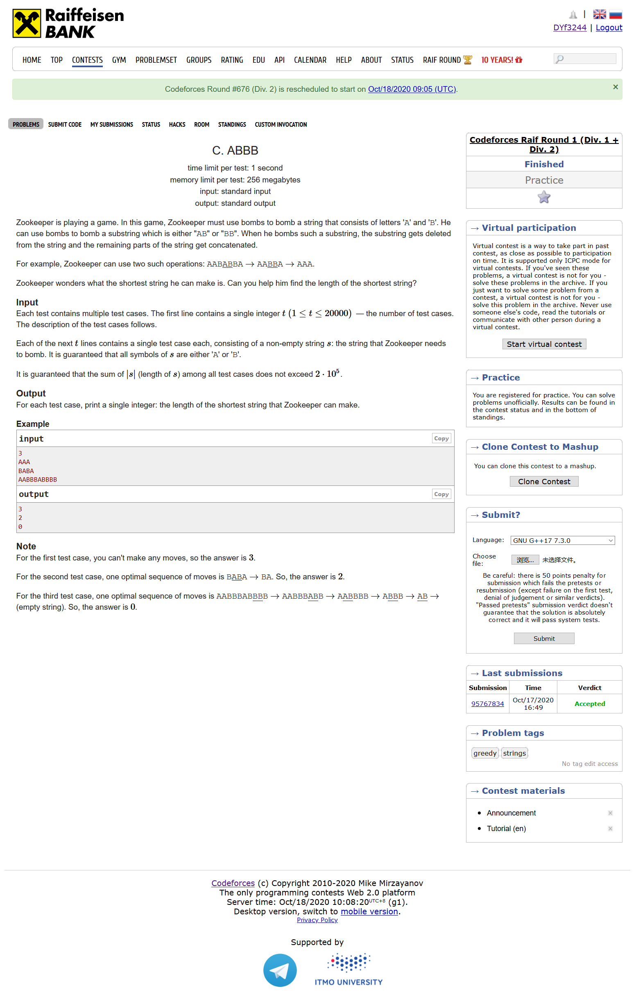
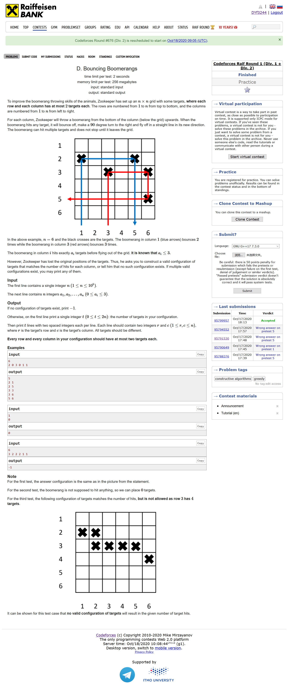
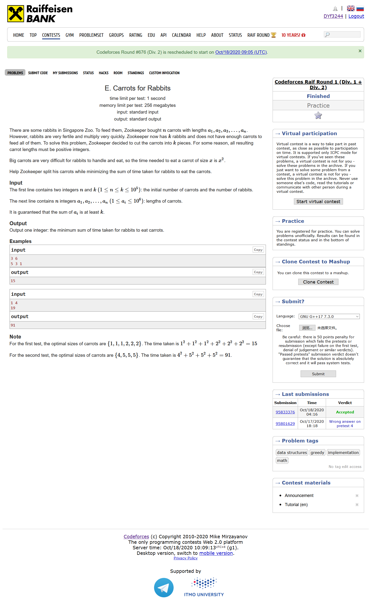
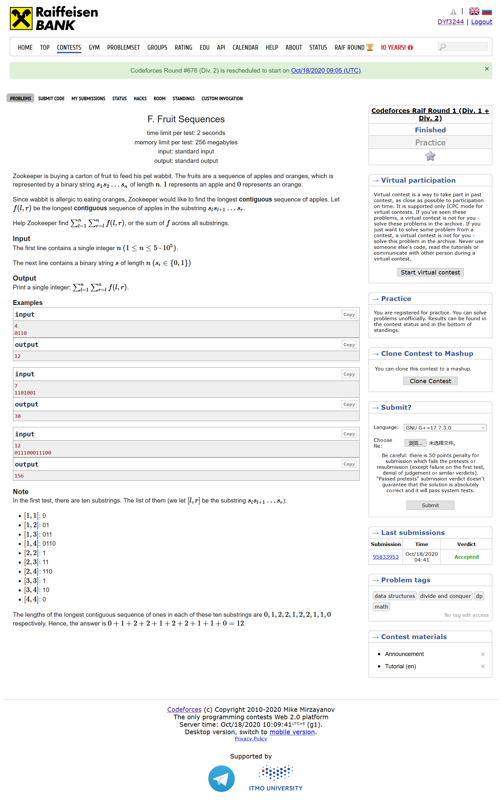

#include <bits/stdc++.h> using namespace std; #define LL long long #define sigma_size 30 #define max_size (int)(1e6+10) #define MAX (int)(1e5+7) int ans[1005]; int main () { ios::sync_with_stdio(0); int T ; cin >> T; for ( int cas = 1 ; cas <= T ; cas++ ) { LL x1 , y1 , x2 , y2; cin >> x1 >> y1 >> x2 >> y2; LL res = abs(x1-x2); res += abs(y1-y2); if ( abs(x1-x2) != 0 && abs(y1-y2) != 0 ) res += 2; ans[cas] = res; } for ( int i = 1 ; i <= T ; i++ ) cout << ans[i] << endl; }

#include <bits/stdc++.h> using namespace std; #define LL long long #define sigma_size 30 #define max_size (int)(3e5+10) #define MAX (int)(1e5+7) int ans[1005]; int n; string s; int mark[max_size]; bool all_clockwise() { for ( int i = 0 ; i < n ; i++ ) if ( s[i] == '<' ) return false; return true; } bool add_coclockwise() { for ( int i = 0 ; i < n ; i++ ) if ( s[i] == '>' ) return false; return true; } int main () { ios::sync_with_stdio(0); int T ; cin >> T; for ( int cas = 1 ; cas <= T ; cas++ ) { cin >> n; cin >> s; int res = 0; bool flag = true; if ( add_coclockwise() || all_clockwise() ) ans[cas] = n; else { int res = 0; for ( int i = 0 ; i < n ; i++ ) if ( s[(i+n-1)%n] == '-' || s[i] == '-' ) res++; ans[cas] = res; } } for ( int i = 1 ; i <= T ; i++ ) cout << ans[i] << endl; }

#include <bits/stdc++.h> using namespace std; #define LL long long #define sigma_size 30 #define max_size (int)(2e5+10) #define MAX (int)(1e5+7) int ans[max_size]; string s; int main () { ios::sync_with_stdio(0); int T ; cin >> T; for ( int cas = 1 ;cas <= T ; cas++ ) { cin >> s; int n = s.length(); vector <char> v; for ( int i = 0 ; i < n ; i++ ) { if ( v.empty() ) v.push_back(s[i]); else if ( v.back() == 'B' ) v.push_back(s[i]); else if ( v.back() == 'A' ) { if ( s[i] == 'A' ) v.push_back(s[i]); else if ( s[i] == 'B' ) v.pop_back(); } } int cnt1 = 0 ; int cnt2 = 0 ; for ( int i = 0 ; i < v.size() ; i++ ) { if ( v[i] == 'B' ) cnt1++; if ( v[i] == 'A' ) cnt2++; } if ( cnt1 % 2 ) ans[cas] = cnt2 + 1; else ans[cas] = cnt2; } for ( int i = 1 ; i <= T ; i++ ) cout << ans[i] << endl; }

#include <bits/stdc++.h> using namespace std; #define LL long long #define sigma_size 30 #define max_size (int)(1e5+10) #define MAX (int)(1e5+7) int n ; int a[max_size]; vector<int> last[4]; vector < pair<int,int> > ans; int row[max_size]; int col[max_size]; int main () { ios::sync_with_stdio(0); cin >> n; for ( int i = 1 ; i <= n ; i++ ) cin >> a[i]; bool flag = 1; for ( int i = 1 ; i <= n ; i++ ) { if ( a[i] == 0 ) { continue; } else if ( a[i] == 1 ) { if ( last[3].size() ) { ans.push_back({last[3].back(),i}); ans.push_back({i,i}); last[3].pop_back(); } else if ( last[2].size() ) { ans.push_back({last[2].back(),i}); last[2].pop_back(); } else ans.push_back({i,i}); } else if ( a[i] == 2 ) { if ( last[3].size() ) { ans.push_back({last[3].back(),i}); last[3].pop_back(); ans.push_back({i,i}); last[2].push_back(i); } else ans.push_back({i,i}) , last[2].push_back(i); } else if ( a[i] == 3 ) { if ( last[3].size() ) { ans.push_back({last[3].back(),i}); ans.push_back({i,i}); last[3].pop_back(); last[3].push_back(i); } else { ans.push_back({i,i}); last[3].push_back(i); } } } for ( int i = 1 ; i <= 3 ; i++ ) if ( last[i].size() ) flag = 0; for ( int i = 0 ; i < ans.size() ; i++ ) { row[ans[i].first]++; col[ans[i].second]++; if ( row[ans[i].first] > 2 || col[ans[i].second] > 2 ) { flag = 0; break; } } if ( !flag ) { cout << "-1" << endl; } else { cout << ans.size() << endl; for ( int i = 0 ; i < ans.size() ; i++ ) cout << ans[i].first << " " << ans[i].second << endl; } }

#include <bits/stdc++.h> using namespace std; #define LL long long #define sigma_size 30 #define max_size (int)(1e6 + 10) #define MAX (int)(1e5+7) int n , k; LL sum = 0 ; priority_queue<pair<LL,pair<LL,LL> > > pq; LL sq (LL i) { return i*i; } LL val ( LL len , LL nums ) { LL d = len / nums; LL b = len - d*nums; return (nums-b)*sq(d) + sq(d+1)*b; } int main () { ios::sync_with_stdio(0); cin >> n >> k; for ( int i = 1 ; i <= n ; i++ ) { LL t ; cin >> t; sum += sq(t); pq.push({val(t,1)-val(t,2) , {t,2}}); } for ( int i = 1 ; i <= k-n ; i++ ) { sum -= pq.top().first; int a = pq.top().second.first , b = pq.top().second.second; pq.pop(); pq.push({val(a,b)-val(a,b+1) , {a,b+1}}); } cout << sum << endl; }

#include <bits/stdc++.h> using namespace std; #define LL long long #define ULL unsigned long long #define sigma_size 30 #define max_size (int)(5e5+10) #define MAX_SIZE (int)(4e6+7) LL hist[max_size] , res = 0 , cur = 0; int n , s[max_size]; string str; int main () { ios::sync_with_stdio(0); cin >> n; cin >> str; str = ' ' + str; for ( int i = 1 ; i <= n ; i++ ) s[i] = str[i] - '0'; for ( int i = 1 ; i <= n ; i++ ) { if ( s[i] == 0 ) res += cur; else { int l = i , r = i; while ( r < n && s[r+1] == 1 ) r++; for ( int x = 1 ; x <= r-l+1 ; x++ ) { cur += (l+x-1) - hist[x]; res += cur; hist[x] = r - x + 1; } i = r; } } cout << res << endl; }